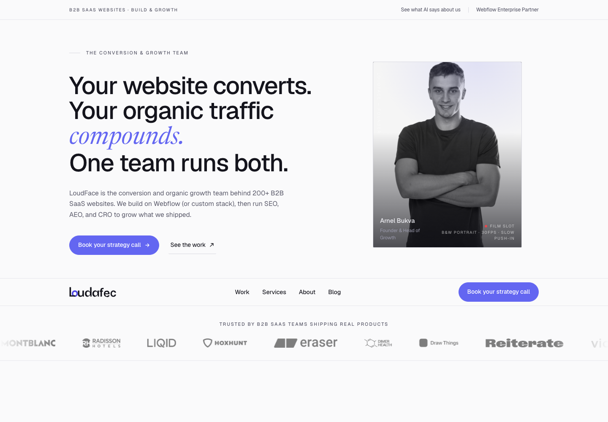
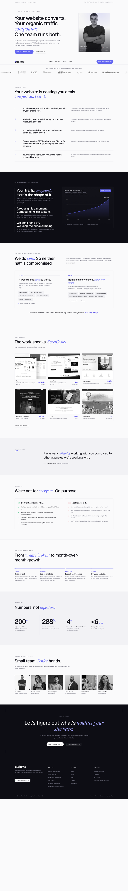
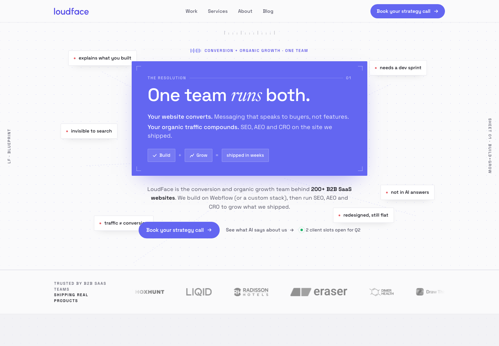
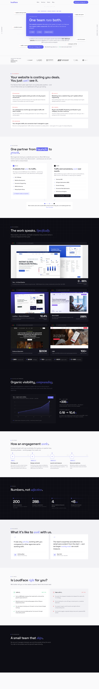
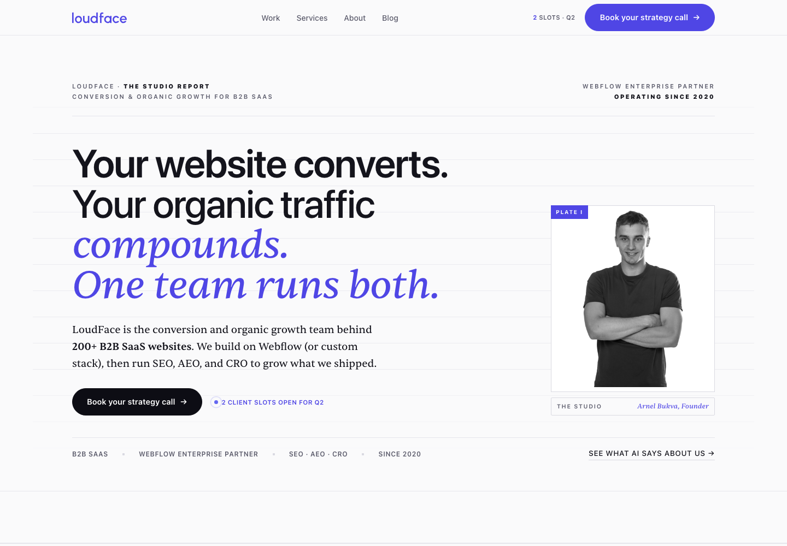
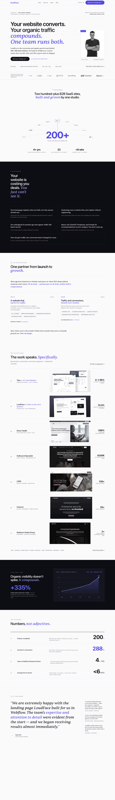
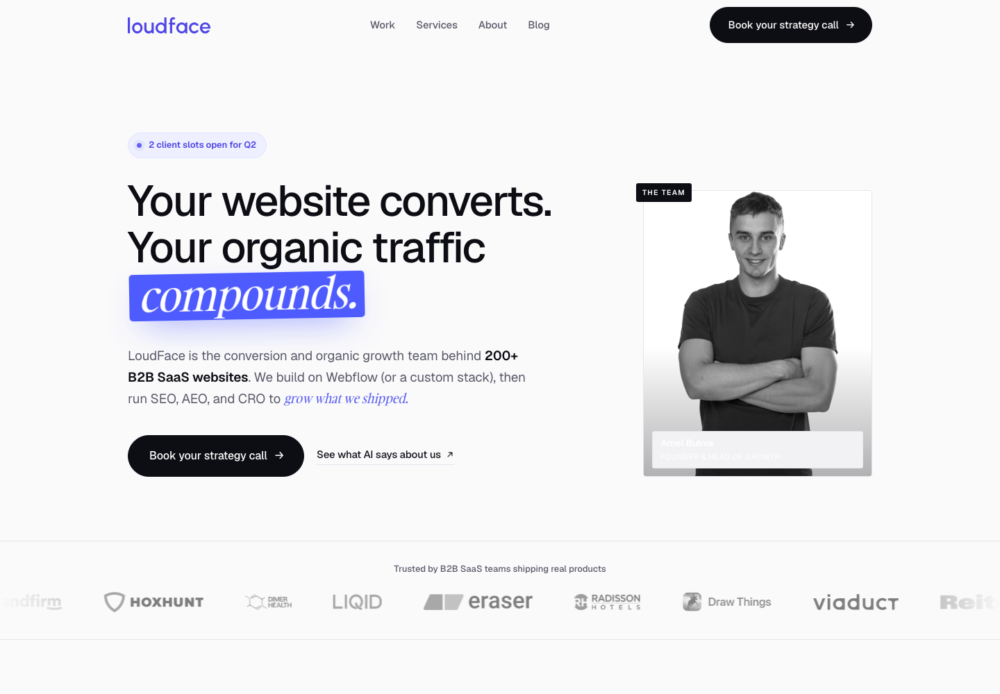
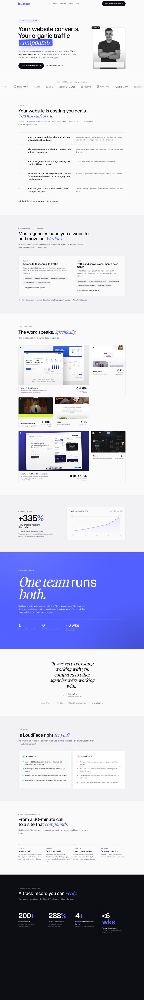

All four steal USVC's discipline — a near-monochrome field where a single accent does all the energy work, grotesque × serif-italic pairing, near-square geometry with exactly one pill — and re-key it off navy onto your white chassis with indigo. Built from real LoudFace copy, real case-study charts, real client logos, real team. Genuinely different spines so this is a real choice, not three framings of one idea. The pick is yours.
| axis | A · The Field | B · Blueprint | C · Editorial Index | D · Loud Restraint | source |
|---|---|---|---|---|---|
| Typography | 4 | 4 | 5 | 4 | llm |
| Hierarchy | 4 | 4 | 5 | 4 | llm |
| Color & restraint | 4 | 4 | 5 | 4 | det+llm |
| Spacing & rhythm | 4 | 4 | 4 | 4 | det+llm |
| Motion & feedback | 4 | 5 | 4 | 4 | llm |
| System-fit (token+voice) | 5 | 4 | 5 | 4 | llm |
| Overall | 4 | 4 | 5 | 4 | llm |
| Ambition & distinctiveness | 3 | 5 | 5 | 4 | llm+critique |
Cinematic B&W founder hero, nav docked low, a dark data-chapter with the real Toku growth curve.


The problem literally assembles into the answer: scattered problem-chips wire into a solid-indigo "One team runs both."


The agency as a beautifully-set annual report: report masthead, network-arc to "200+", work as a ledger, stats as a financial table.


Quiet ink-on-paper everywhere so one move detonates: a color-blocked "compounds." + a full-bleed electric chapter for "One team runs both."

